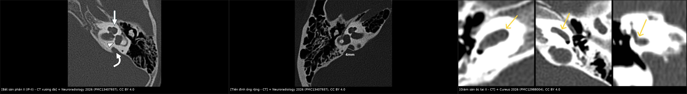
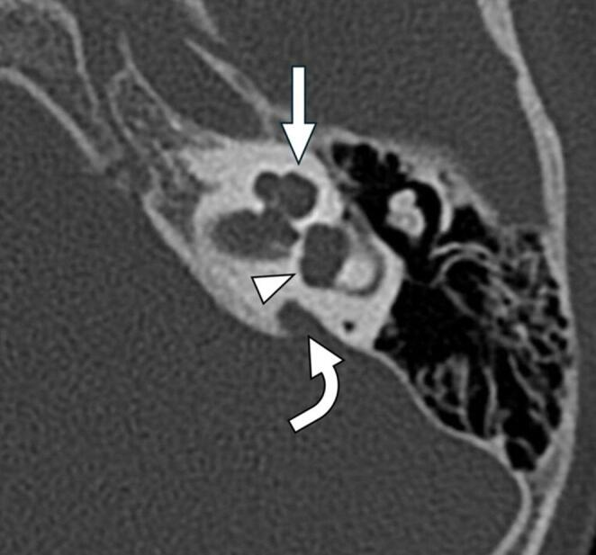
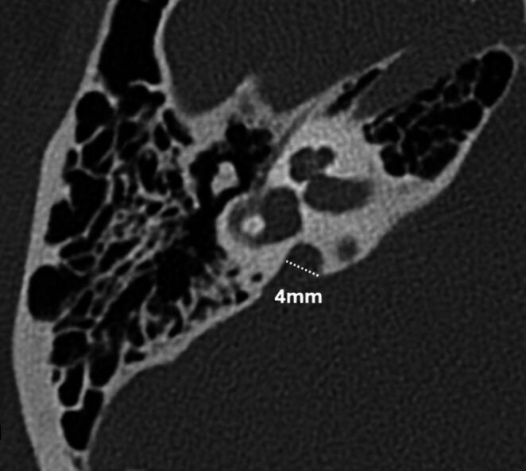
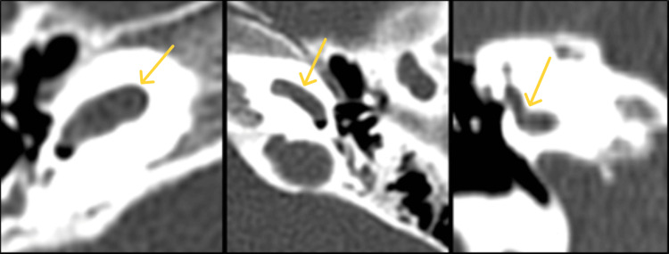

702 — Cấy ốc tai điện tử ở trẻ điếc do nhiễm trùng bào thai (rubella/CMV): chọn tai nào, cấy lúc nào, và hình ảnh tiền phẫu quyết định kết quả
Tags: pattern:di-thinh-tiep-nhan pattern:giam-san-oc-tai pattern:bat-san-phan pattern:ong-tai-trong-hep pattern:di-thinh-tien-trien vung:tai-trong vung:tai-xuong-da anatomy:oc-tai anatomy:day-than-kinh-VIII protocol:CT-xuong-da-lat-mong protocol:MRI-CISS protocol:ABR incidentaloma:khong
Mức chắc chắn (certainty): tổng hợp y văn (literature synthesis) — ghép tổng quan 14 tham số CT tiền phẫu cho cấy ốc tai (Neuroradiology 2026, PMC13407937), loạt 56 trẻ cCMV/89 tai cấy (PMC13703150), meta-analysis điếc muộn do CMV bẩm sinh (PMC13425846), nghiên cứu 30 năm về phát triển nghe lời nói sau cấy (PMC13234484), 107 trẻ thiếu sản dây thần kinh ốc tai (PMID 42867353), 38 ca rubella bẩm sinh được cấy (PMC12156128), giám sát CRS Ấn Độ 2016–2025 (PMC13546868), HRCT+MRI 10 ca tiền phẫu (Cureus 2026, PMC12988004). Không có ca do nhóm tự chụp.
Câu hỏi thực hành: bé gái 14 tháng, ABR hai tai không đáp ứng ở 100 dB nHL, không dùng được máy trợ thính. Mẹ nhiễm CMV trong thai kỳ (IgM dương tính), bé không triệu chứng lúc sinh, sàng lọc thính lực sơ sinh qua — đến 12 tháng mới phát hiện không phản ứng với tiếng. Câu hỏi: có phải cấy ốc tai không, cấy tai nào, cần chụp gì trước mổ, và có nguy cơ gì? Bài chốt ba quyết định: (1) nhiễm trùng bào thai là nguyên nhân điếc tiếp nhận tiến triển và muộn — "sàng lọc sơ sinh qua" không loại trừ (13,9% trẻ cCMV có điếc muộn; PMC13425846), nên chỉ định cấy không chờ "ổn định"; (2) MRI là bắt buộc trước cấy để đếm dây thần kinh ốc tai — không có dây thần kinh thì cấy ốc tai vô ích, phải chuyển cấy thân não (ABI) (PMID 42867353); (3) cấy trước 18 tháng cho kết quả ngôn ngữ tốt hơn rõ rệt (PMC13234484), và bất thường tai trong (IP-II, giảm sản ốc tai, ống nội dịch rộng) quyết định đường mổ, chiều dài điện cực và nguy cơ "gusher" dịch não tủy.
1. Tổng quan bệnh học – cơ chế hình ảnh: vì sao CMV/rubella làm điếc, và vì sao phải nhìn cả ốc tai lẫn dây thần kinh
- Cơ chế điếc của nhiễm trùng bào thai (hai bệnh, hai kiểu diễn tiến):
- CMV bẩm sinh (cCMV): virus gây viêm thể vân mạch (stria vascularis), tế bào lông và hạch xoắn (spiral ganglion); tổn thương có thể một bên, không đối xứng, dao động và tiến triển sau sinh — nên điếc muộn/tiến triển là đặc trưng. Trong 56.892 trẻ được sàng lọc bằng PCR nước tiểu: tỷ lệ nhiễm 0,46%, 83,4% không triệu chứng lúc sinh, 13,9% có điếc muộn (PMC13425846).
- Rubella bẩm sinh (CRS): virus gây chết tế bào và viêm mê nhĩ trong giai đoạn cơ quan cảm thụ đang biệt hóa (tam cá nguyệt 1) → điếc nặng–sâu, thường hai bên, có thể tiến triển. Trong giám sát 583 ca CRS xác nhận (Ấn Độ 2016–2025): 26,8% có điếc, 81,3% có dị tật tim, tử vong tích lũy 1 năm 32,2% (PMC13546868) — nên điếc là phần nổi của "bệnh đa cơ quan", phải khám mắt/tim/trí tuệ song song (bài 6128).
- Cả hai đều không có thuốc phục hồi tế bào lông → phục hồi chức năng duy nhất là cấy ốc tai điện tử (cochlear implant, CI) hoặc cấy thân não (auditory brainstem implant, ABI) khi không có dây thần kinh.
- TẠI SAO hình ảnh tiền phẫu quyết định kết quả (vật lý + giải phẫu):
- CT xương đá (HRCT, 0,4–0,6 mm, bone kernel): hiển thị vỏ xương mê nhĩ — thấy số vòng ốc tai, vách giữa các vòng (interscalar septum), trụ ốc tai (modiolus), tiền đình, ống bán khuyên, ống nội dịch, trần tai giữa, ống thần kinh mặt, bóng tĩnh mạch cảnh. Đây là bản đồ cho đường mổ hốc nhận (receiver well), mastoide, mặt chuỳ và vị trí mở ốc tai (cochleostomy).
- MRI 3T, chuỗi nặng T2 (CISS/FIESTA/SPACE), lát ≤ 0,8 mm: hiển thị dịch nội dịch sáng và dây thần kinh VIII tối trong ống tai trong — thấy 4 dây thần kinh (VII, VIII–ốc tai, VIII–tiền đình trên/dưới). Đây là thứ duy nhất đếm được dây thần kinh ốc tai; CT chỉ suy ra gián tiếp qua đường kính ống tai trong (IAC).
- Ngưỡng định lượng quan trọng:
- Ống tai trong hẹp: đường kính < 3 mm ở giữa ống → nghĩ hẹp/thiếu sản dây thần kinh (đo trên MRI, không đo trên CT).
- Ống nội dịch rộng (EVA): đường kính > 1,5 mm ở điểm giữa hoặc > 1,9 mm ở lỗ mở (operculum) → nguy cơ "gusher" dịch não tủy khi mở ốc tai (PMC13407937, Fig 14 minh hoạ 4 mm).
- Bất sản phần II (incomplete partition type II — "Mondini"): đỉnh ốc tai dạng nang, vách giữa các vòng khiếm khuyết, tiền đình giãn, ống nội dịch giãn (PMC13407937, Fig 12).
- Giảm sản ốc tai (cochlear hypoplasia, CH): ốc tai nhỏ, ít vòng, có thể thiếu dây thần kinh ốc tai (Cureus 2026, Fig 6: CH II + tiền đình bất thường + thiếu ống bán khuyên trên + bất sản dây thần kinh ốc tai).
- TẠI SAO "đếm dây thần kinh" lại quyết định: điện cực cấy chỉ có giá trị nếu có hạch xoắn + sợi trục để kích thích. Bất sản dây thần kinh ốc tai (cochlear nerve aplasia) → CI không mang lại nghe, phải ABI; thiếu sản (hypoplasia) → CI vẫn có thể tốt nếu chọn tai đúng, và tỷ lệ diện tích dây thần kinh VIII/dây VII (VCN/FN) là yếu tố dự báo độc lập (107 trẻ, PMID 42867353). Trong nhóm cCMV có bất thường não trên MRI, điểm CAP sau cấy thấp hơn nhóm cCMV không bất thường não — tức tổn thương trung ương giới hạn kết quả dù ốc tai tốt (PMC13703150).
- TẠI SAO thời điểm quan trọng — bằng số: trẻ cấy trước 18 tháng có phát triển nghe lời nói sớm nhanh hơn; nguyên nhân nhiễm trùng trước sinh và bệnh lý thần kinh thính giác là yếu tố tiên lượng xấu hơn (294 trẻ, 30 năm; PMC13234484). Ngược lại, không cấy cũng có giá: 6,6% (36/545) người dùng bỏ thiết bị, 8,7% ở trẻ điếc trước ngôn ngữ — lý do hay gặp là không thích nghi âm thanh (48%) và không thấy hiệu quả chủ quan (48%) (PMID 42969302) → tư vấn kỳ vọng thực tế là một phần của chỉ định.
2. Mẫu hình + chẩn đoán phân biệt theo vị trí (Gamut)
- Mẫu hình cốt lõi: trẻ điếc tiếp nhận nặng–sâu hai bên, không hưởng lợi từ máy trợ thính, có yếu tố nhiễm trùng bào thai (CMV, rubella, toxoplasma, herpes) — cần phân loại bất thường tai trong theo giải phẫu để chọn can thiệp.
- Gamut theo vị trí (từ ngoài vào trong):
- Ốc tai: bất sản hoàn toàn (Michel) → không cấy được; hang chung (common cavity); bất sản phần (incomplete partition) I/II/III; giảm sản ốc tai (CH); ốc tai bình thường nhưng xơ hóa lòng (labyrinthitis ossificans) sau viêm màng não.
- Tiền đình – ống bán khuyên: loạn sản tiền đình, thiếu ống bán khuyên trên (thường đi kèm CH — Cureus Fig 6); EVA (ống nội dịch rộng).
- Ống tai trong – dây thần kinh: hẹp ống tai trong (< 3 mm), bất sản/thiếu sản dây thần kinh ốc tai, dây thần kinh mặt lạc chỗ (ảnh hưởng đường mổ).
- Mê nhĩ – màng não: rò dịch não tủy qua ốc tai (khiếm khuyết vách), viêm màng não tái diễn (liên quan dị tật tai trong — xem mục 5).
- Mnemonic "CHIP" cho dị tật ốc tai: Common cavity (hang chung) – Hypoplasia (giảm sản) – Incomplete partition (I, II, III) – Partial/complete aplasia (Michel). CHIP xếp theo mức độ khiếm khuyết vỏ xương và trụ ốc tai tăng dần; càng khiếm khuyết nhiều → càng dễ thiếu dây thần kinh → càng phải MRI.
- Điểm khác biệt với người lớn: ở trẻ, nhiễm trùng bào thai đứng đầu nguyên nhân điếc tiến triển/muộn; di truyền (GJB2, SLC26A4) và viêm màng não là hai nguyên nhân lớn còn lại. SLC26A4 hay đi với EVA hai bên; GJB2 thường ốc tai bình thường trên hình ảnh → hình ảnh bình thường không loại trừ điếc di truyền.
3. Bảng so sánh phân biệt (ma trận đối chiếu)
| Thực thể (entity) | Hình ảnh điển hình (CT / MRI) | Chốt vào (rule-in) | Chốt loại (rule-out) | Gợi ý xác nhận |
|---|---|---|---|---|
| Điếc do cCMV, tai trong bình thường | CT: ốc tai đủ 2,5 vòng, không EVA; MRI: dây thần kinh ốc tai đủ, có thể bất thường chất trắng | Tiền sử CMV + điếc tiến triển/dao động + hình ảnh tai trong bình thường | EVA/IP-II rõ → nguyên nhân giải phẫu (dù vẫn có thể đồng thời CMV) | PCR CMV nước tiểu/máu sơ sinh (bài 6102); MRI não |
| Điếc do rubella bẩm sinh | Tai trong thường bình thường; có thể kèm dị tật tim, đục thủy tinh thể | CRS xác nhận (IgM/PCR) + điếc nặng–sâu hai bên | Dị tật tai trong lớn → nghĩ nguyên nhân khác/đồng thời | Huyết thanh/PCR rubella; khám mắt–tim (bài 6128) |
| Bất sản phần II (IP-II / "Mondini") | CT: đỉnh ốc tai dạng nang, thiếu vách giữa vòng đỉnh–giữa, tiền đình giãn, ống nội dịch giãn | Đỉnh ốc tai nang + tiền đình giãn | Ốc tai đủ vòng, vách liên tục → không IP-II | HRCT 0,5 mm + MRI CISS (đếm vòng, xem dây thần kinh) |
| Giảm sản ốc tai (CH) | CT: ốc tai nhỏ, < 2 vòng, trụ ốc tai kém; MRI: thường thiếu sản/bất sản dây thần kinh ốc tai | Ốc tai nhỏ + dây thần kinh ốc tai nhỏ/không thấy | Ốc tai đủ vòng + dây thần kinh rõ → loại CH | MRI CISS là chốt; đo đường kính ốc tai (PMC13407937 Fig 13) |
| Thiếu sản dây thần kinh ốc tai (CND) | MRI: dây thần kinh ốc tai mảnh/không thấy, IAC < 3 mm, VCN/FN thấp; CT có thể bình thường | Không thấy/teo dây thần kinh ốc tai trên CISS + IAC hẹp | Dây thần kinh đủ 4 bó trong IAC → loại CND | MRI 3T CISS + đo VCN/FN; EABR xuyên màng nhĩ khi còn nghi ngờ |
| Xơ hóa mê nhĩ sau viêm màng não | CT: mất tín hiệu dịch trong ốc tai/vòng, có thể canxi hóa; MRI T2: mất tín hiệu nội dịch từng phần | Tiền sử viêm màng não + mất tín hiệu T2 trong ốc tai | Dịch T2 sáng toàn bộ ốc tai → chưa xơ hóa | MRI T2 lát mỏng; cấy sớm trước khi xơ hóa |
| Ống nội dịch rộng (EVA) | CT/MRI: > 1,5 mm ở điểm giữa, > 1,9 mm ở operculum, có thể kèm IP-II | Ống nội dịch giãn + mất nghe tiến triển | < 1,5 mm → không EVA | Đo trên CT axial/coronal + MRI; cảnh báo gusher |

Trái: bất sản phần II — đỉnh ốc tai dạng nang (mũi tên), tiền đình giãn (đầu mũi tên), ống nội dịch giãn (mũi tên cong). Giữa: ống nội dịch rộng đo 4 mm ở operculum. Phải: giảm sản ốc tai II — ốc tai nhỏ, tiền đình bất thường. Ảnh ghép letterbox: Neuroradiology 2026 (PMC13407937) + Cureus 2026 (PMC12988004), cả hai CC BY 4.0.4. Protocol chụp + tiêu chuẩn chỉ định/phân tầng
- Quy trình hình ảnh tiền phẫu (bắt buộc cả hai):
- HRCT xương đá: lát 0,4–0,6 mm, bone kernel, axial + coronal (hoặc reformat đa bình diện), trường nhỏ; đánh giá 9 điểm: (1) hốc nhận/mastoide, (2) mặt chuỳ, (3) ốc tai (số vòng, vách, trụ), (4) tiền đình/ống bán khuyên, (5) ống nội dịch, (6) cửa sổ tròn, (7) ống thần kinh mặt, (8) bóng tĩnh mạch cảnh/màng não, (9) ống tai trong.
- MRI 3T: CISS/FIESTA/SPACE T2 nặng, lát ≤ 0,8 mm qua ống tai trong; đếm 4 bó dây thần kinh, đo đường kính IAC, diện tích VCN/FN; thêm T2/FLAIR toàn não (cCMV: chất trắng, canxi hóa, bất thường vỏ) và T1 sau tiêm khi nghi viêm.
- Khi nào chụp: trước cấy, không trì hoãn; nếu đã có viêm màng não → chụp ngay vì xơ hóa tiến triển trong vài tuần; nếu cCMV → chụp một lần trước cấy + MRI não (không cần chụp lặp lại chỉ để "theo dõi ốc tai").
- Tiêu chuẩn chỉ định cấy (thực hành, không phải RADS):
- Điếc tiếp nhận nặng–sâu hai bên (ngưỡng điển hình ≥ 90 dB HL ở tần số nói), không hưởng lợi với máy trợ thính 3–6 tháng ở trẻ lớn, ngay khi xác định ở trẻ nhỏ.
- Tuổi: cấy càng sớm càng tốt, ưu tiên 6–18 tháng; trước 18 tháng có lợi thế phát triển nghe lời nói (PMC13234484). Ở trẻ viêm màng não, cấy trước khi xơ hóa (không chờ đủ tuổi nếu ốc tai đang xơ).
- Chống chỉ định/đổi hướng: bất sản dây thần kinh ốc tai → ABI; bất sản ốc tai (Michel) → ABI; chậm phát triển nặng/không hợp tác phục hồi chức năng → cân nhắc kỹ, nhưng không phải chống chỉ định tuyệt đối.
- Phân tầng theo hình ảnh (không có hệ điểm chuẩn — ghi rõ "chưa có RADS"):
- Nhóm A — giải phẫu thuận lợi: ốc tai đủ vòng, dây thần kinh đủ → CI tiêu chuẩn, tiên lượng tốt.
- Nhóm B — dị tật nhưng còn ốc tai: IP-II, EVA, CH nhẹ → CI được, chuẩn bị gusher, chọn điện cực ngắn/phù hợp, theo dõi áp lực dịch não tủy.
- Nhóm C — thiếu sản dây thần kinh: → CI có điều kiện (chọn tai tốt hơn, EABR), kỳ vọng thấp hơn; bất sản → ABI.
- Nhóm D — ốc tai xơ hóa/không thấy lòng: → CI cấp (drill-out) hoặc ABI.
flowchart TD
A[Trẻ điếc tiếp nhận nặng-sâu hai bên + yếu tố nhiễm trùng bào thai] --> B[ABR/ASSR xác nhận + thử máy trợ thính]
B --> C[HRCT xương đá + MRI 3T CISS]
C --> D{Có dây thần kinh ốc tai?}
D -->|Không| E[ABI - cấy thân não]
D -->|Có, nhưng thiếu sản| F[Chọn tai tốt hơn + EABR; tư vấn kỳ vọng thấp hơn]
D -->|Đủ| G{Ốc tai có dị tật?}
G -->|Không| H[CI tiêu chuẩn - cấy sớm trước 18 tháng]
G -->|IP-II / EVA| I[CI + chuẩn bị gusher + điện cực phù hợp]
G -->|Giảm sản ốc tai| J[CI có điều kiện / cân nhắc ABI]
G -->|Xơ hóa sau viêm màng não| K[CI cấp - drill-out trước khi xơ hóa hoàn toàn]
H --> L[Phục hồi chức năng + theo dõi định kỳ]
I --> L
F --> L
J --> L
K --> L
5. Biến thể bình thường và cạm bẫy
- "Sàng lọc thính lực sơ sinh qua" không loại trừ cCMV: 83,4% trẻ nhiễm không triệu chứng lúc sinh và 13,9% có điếc muộn (PMC13425846) → trẻ có tiền sử CMV phải theo dõi ABR định kỳ nhiều năm, không chỉ một lần.
- MRI bình thường không loại trừ điếc: GJB2 và nhiều nguyên nhân di truyền có tai trong bình thường; ngược lại CMV có thể gây điếc không kèm dị tật. Hình ảnh bình thường = loại trừ dị tật, không loại trừ điếc.
- Đừng đo ống tai trong trên CT rồi kết luận dây thần kinh: CT chỉ thấy xương; ống tai trong hẹp trên CT là gợi ý, chốt là MRI CISS. Ngược lại, IAC bình thường vẫn có thể thiếu dây thần kinh ốc tai.
- EVA: hai ngưỡng khác nhau, đừng lẫn: > 1,5 mm ở điểm giữa (Valvassori) vs > 1,9 mm ở operculum (Cincinnati). Ghi rõ đo ở đâu và mm; đo sai vị trí → bỏ sót hoặc overcall.
- "Gusher" không phải biến chứng của bệnh mà của giải phẫu: EVA, IP-II, IP-III, hang chung đều có khiếm khuyết vách → mở ốc tai là mở vào khoang dịch não tủy. Phải chuẩn bị sẵn (nâng đầu giường, dẫn lưu, đóng kín lỗ mở, theo dõi rò dịch não tủy).
- Xơ hóa mê nhĩ tiến triển nhanh: CT bỏ sót giai đoạn sớm (xơ hóa chưa canxi hóa); MRI T2 là chuẩn. Ở trẻ viêm màng não, chờ 6 tháng để "ổn định" là mất cửa sổ — hình ảnh quyết định thời điểm.
- Bất thường não trên MRI ở cCMV đổi tiên lượng: nhóm có bất thường não có CAP thấp hơn sau cấy (PMC13703150) → tư vấn trước mổ phải dựa trên MRI não, không chỉ ốc tai.
- Artifact và tư thế: HRCT không đủ lát mỏng làm vách giữa các vòng giả biến mất → gọi nhầm IP-II; MRI không đủ độ phân giải làm dây thần kinh giả teo. Luôn ghi thông số (mm, kernel, từ trường) trong báo cáo.
6. Tự lượng giá — Blind Quiz
Ca 1 — Bé gái 14 tháng, ABR không đáp ứng 100 dB nHL, mẹ nhiễm CMV trong thai. Nhìn ảnh CT xương đá, mô tả trước.

- Câu hỏi: (1) Có bao nhiêu vòng ốc tai? (2) Đỉnh ốc tai và tiền đình bất thường thế nào? (3) Chẩn đoán giải phẫu? (4) Nguy cơ khi mổ?
Bấm để hiện đáp án (findings + chẩn đoán)
- Dấu hiệu: đỉnh ốc tai dạng nang (mũi tên trắng), vách giữa vòng đỉnh–giữa khiếm khuyết, tiền đình giãn (đầu mũi tên), ống nội dịch giãn (mũi tên cong).
- Chẩn đoán: bất sản phần II (incomplete partition type II, "Mondini") — khiếm khuyết vách trục ốc tai, còn vỏ xương.
- Nguy cơ khi mổ: "gusher" dịch não tủy do thông thương với khoang dưới nhện; có thể kèm thiếu sản dây thần kinh ốc tai → phải xem MRI trước khi quyết định.
- Nguồn ảnh: Neuroradiology 2026, PMCID PMC13407937, CC BY 4.0.
Ca 2 — Bé trai 3 tuổi, nghe kém tiến triển 1 năm, không tiền sử viêm màng não. CT xương đá:

- Câu hỏi: (1) Cấu trúc nào đang được đo? (2) Ngưỡng bệnh lý? (3) Liên quan đến cấy ốc tai?
Bấm để hiện đáp án
- Cấu trúc: ống nội dịch (vestibular aqueduct) đo tại operculum, ở ca này 4 mm.
- Ngưỡng: > 1,9 mm ở operculum (hoặc > 1,5 mm ở điểm giữa) → EVA; thường đi với SLC26A4 và IP-II.
- Liên quan cấy: nguy cơ gusher dịch não tủy cao, cần chuẩn bị và chọn điện cực phù hợp; EVA cũng gây điếc tiến triển nên không chờ.
- Nguồn ảnh: Neuroradiology 2026, PMCID PMC13407937, CC BY 4.0.
Ca 3 — Bé gái 20 tháng, điếc sâu hai bên, không hưởng lợi máy trợ thính. CT xương đá 3 lát liên tiếp:

- Câu hỏi: (1) Ốc tai có gì bất thường? (2) Cần thêm chuỗi nào để quyết định cấy? (3) Nếu không thấy dây thần kinh ốc tai thì làm gì?
Bấm để hiện đáp án
- Dấu hiệu: ốc tai nhỏ, ít vòng (giảm sản ốc tai — CH II), tiền đình bất thường, ca nguồn còn thiếu ống bán khuyên trên và bất sản dây thần kinh ốc tai.
- Cần thêm: MRI 3T CISS/FIESTA để đếm 4 bó dây thần kinh trong ống tai trong và đo IAC/VCN–FN — quyết định CI hay ABI.
- Nếu bất sản dây thần kinh ốc tai: CI không có giá trị, chuyển cấy thân não (ABI); nếu thiếu sản: có thể CI tai tốt hơn, cân nhắc EABR xuyên màng nhĩ và tư vấn kỳ vọng thấp hơn.
- Nguồn ảnh: Cureus 2026, PMCID PMC12988004, CC BY 4.0.
Bài liên quan chéo
- 6128 – Rubella bẩm sinh (CRS) (điếc 75,6%, tam chứng Gregg)
- 6102 – Nhiễm CMV bẩm sinh (chẩn đoán, PCR, điều trị)
- 6100 – Chăm sóc và cai ống mở khí quản ở trẻ (trẻ điếc + bệnh nền hô hấp)
- 720 – Cholesteatoma xương đá (giải phẫu xương đá, đường mổ)
- 715 – Viêm xoang nấm xâm lấn (nhiễm trùng lan nội sọ ở trẻ giảm miễn dịch)
- 700 – Tổng quan Đầu Cổ
Ảnh
images/702_oc-tai_CT_Neuroradiology2026-PMC13407937-fig12.jpg— Neuroradiology 2026 (PMC13407937), CC BY 4.0.images/702_oc-tai_CT_Neuroradiology2026-PMC13407937-fig14.jpg— Neuroradiology 2026 (PMC13407937), CC BY 4.0.images/702_oc-tai_CT-Cureus2026-PMC12988004-fig6.jpg— Cureus 2026 (PMC12988004), CC BY 4.0.images/composite_oc-tai.jpg— ảnh ghép letterbox 3 ảnh trên, CC BY 4.0 (xemimages/CREDITS.md).
Không dùng để chẩn đoán độc lập khi chưa có người hướng dẫn.